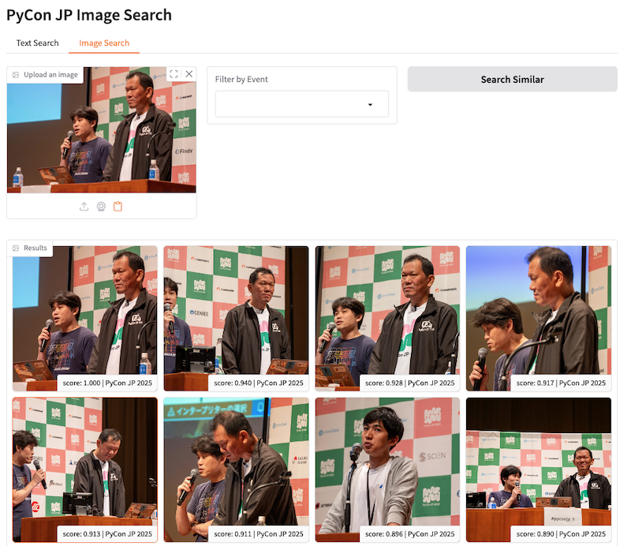
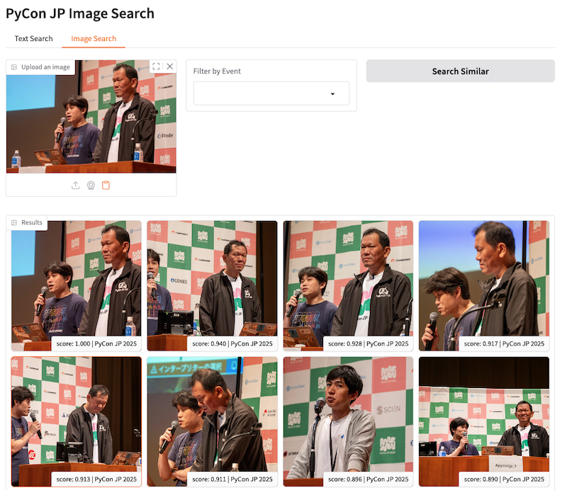

画像からテキスト生成（キャプション生成）の実験報告
前回までの記事で、画像のベクトル検索の実験を進めてきましたが、今回は「画像からテキスト（キャプション）」を生成するモデルの実験を行いました。 画像の内容を言語化することで、検索のキーワードマッチングや、画像の内容説明（アクセシビリティ向上）などへの応用が期待できます。
実験の詳細な結果は以下のノートブックにまとめてあります。
前回までの記事で、画像のベクトル検索の実験を進めてきましたが、今回は「画像からテキスト（キャプション）」を生成するモデルの実験を行いました。 画像の内容を言語化することで、検索のキーワードマッチングや、画像の内容説明（アクセシビリティ向上）などへの応用が期待できます。
実験の詳細な結果は以下のノートブックにまとめてあります。
前回 2026-02-13 での報告以降、Image Vector プロジェクトでは新たな可能性を探るためにいくつかの重要な実験を行いました。今回はその進捗と成果について共有します。
まず、顔認識（Face Recognition）の実装について検証を行いました。
結論として、現在のOSSモデルを利用した顔認識機能は 非常に高いレベル に達していることが確認できました。 CMSにおいて「誰が写っているか」を自動でタグ付けしたり、特定の人物の写真を瞬時に検索したりする機能の実装において、現在のモデルは十分実用的な性能を持っています。これにより、単なる「類似画像検索」だけでなく、「人物検索」という強力な軸をシステムに組み込む準備が整いました。
次に、アーキテクチャ面での大きな収穫です。ONNX Runtime と Transformers.js を用いた検証を行いました。
重要な発見は、Transformers.jsを使ったJSでの実装も十分に可能である という点です。具体的には、Python (PyTorch) で生成した画像ベクトルと、JavaScript (Transformers.js) で生成したテキスト検索クエリの埋め込みベクトルが完全な互換性を持つ ことが確認されました。
これは、重い画像処理やインデックス作成はサーバーサイド（Python）でバッチ処理しておき、ユーザーが検索窓に入力したキーワードのベクトル化は、サーバーを介さずにユーザーのブラウザ上（JavaScript）で完結させるという構成が可能であることを意味します。サーバー負荷を抑えつつ、高速な検索体験を提供できる可能性があります。
最後に、より高性能なモデルとして SigLIP 2 の検証を行いました。
検証の結果、SigLIP 2 は前モデルと比較しても明確に良くなっている ことが確認できました。特に画像のニュアンスを捉える能力や、多言語での検索精度において期待が持てます。これを ONNX 化して利用することで、推論速度とモデルサイズのバランスを取りながら、より高精度な検索システムを構築できる見込みです。
今回の実験を通じて、顔認識の実用性、クライアントサイドでの推論の可能性、そして最新モデルによる性能向上が確認できました。今後はこれらの要素を統合し、より高度な画像検索システムの構築を目指していきます。
前回の記事ではベクトル検索の基本構成を整理しました。本稿では、言語と画像が同じ空間で検索できるマルチモーダルの話題、近似近傍探索やベクトルDBの選択肢、さらにレガシー環境での工夫やインフラの現実的な論点まで、少し広い視点でまとめます。
数年前から取り組んでいた、Plone向けのベクトル（セマンティック）検索エンジンを、ついに collective.vectorsearch パッケージとしてリリースしました。
長らく構想段階や実験的な実装に留まっていましたが、いくつかの重要な要因が重なり、実用的なレベルまで作り込むことができました。
PyPIへのリリースはまだしていませんが、GitHubからソースコードを入手していただければ、すぐに利用を開始できます。
一度は停滞していたこのプロジェクトですが、以下の理由から「今ならできる」と確信し、開発を再スタートさせました。
LSH-cascade方式によるスケーラビリティの確保 大規模なデータセットに対しても現実的な速度とリソース使用量で動作する見込みが立ちました。特に、Pythonのみで完結するライブラリ群を活用することで、Ploneの既存スタックとの親和性を保ちながら実装できました。
多様な選択肢の確立 検索方式やEmbeddingモデル（埋め込みモデル）において、複数のアルゴリズムやモデルを柔軟に選択・切り替えられるアーキテクチャが見えてきました。これにより、CPUのみの環境からGPUを搭載した高性能サーバーまで幅広く対応可能になりました。
AIコーディングアシストによる開発加速 これが最も大きな要因の一つかもしれません。AIによる支援を受けることで、複雑なアルゴリズムの実装やテストコードの作成が飛躍的にスムーズになり、開発スピードが向上しました。
今回完成した collective.vectorsearch は、以下の特徴を持っています。
Ploneの標準的な検索機構である ZCatalog に、新しいインデックスタイプ VectorIndex を追加します。これにより、従来のテキスト検索や日付検索と組み合わせてベクトル検索を行うことが可能になります。
研究開発プロジェクト lsh-cascade-poc の成果を取り入れ、状況に応じて以下の検索方式を自動的に使い分けます。
デフォルトでは FastEmbed を採用しており、CPU環境でも高速に動作する量子化モデル (All-MiniLM-L6-v2, E5-Base Multilingual) をすぐに利用できます。また、GPU環境がある場合は [gpu] オプションを追加することで、PyTorchベースのモデルも利用可能です。
まずは基本的なベクトル検索機能を提供しましたが、今後はRAG（Retrieval-Augmented Generation）への応用や、リランキング機能の開発を続けていきます。リランキング機能は既存のキーワード検索との融合やコンテンツのライフサイクル管理なども考慮して開発しています。
ぜひ、GitHubリポジトリをチェックしてみてください。
Image Vector PoC プロジェクトの一環として、Gradioを使用したデモアプリを作成し、実際のデータを用いた検証を行っています。
今回作成したデモアプリでは、以下の主要な機能を実装しました。
モデルには、事前の実験で多言語対応において良好な結果を示した Google SigLIP を採用しています。
検証には、PyCon JP がFlickrで公開している3万枚を超える写真データを使用しました。
以下が、デモアプリのスクリーンショットです。
 

実際に触ってみて感じた点は以下の通りです。
また、過去のイベント写真を眺めていると、個人的に懐かしい写真にも予期せず出会うことがあり、技術的な検証以上の感慨深さがありました。
本検証で使用した写真データについて、以下の通り付記します。 - 使用した写真は CC-BY PyCon JP のライセンス下で公開されているものです。 - 筆者（寺田）は一般社団法人PyCon JP Associationの理事を務めておりますが、写真の取得にあたっては他の理事の許可を得た上でAPIキーを取得し、実施しました。
新しいプロジェクトとして、画像のベクトル検索を検証する Image Vector PoC を開始しました。
この実験的なプロジェクトでは、昨今のマルチモーダルモデルの進化を受けて、画像のベクトル化による検索システムがどこまで実用的かを検証します。特に、自然言語（日本語）で「どのような画像か」を説明することで、意図した画像を見つけ出せるかどうかに焦点を当てています。
現在、いくつかのモデルを比較検討していますが、日本語での検索においては Google SigLIP が比較的意図に近い結果を返す傾向が見られています。
まずはこの SigLIP を使用したシンプルな画像検索システムをサンプルとして構築し、実際の検索精度や使い勝手を確認していく予定です。
リポジトリはこちら： https://github.com/cmscom/image-vector-poc
前回の記事（2月4日の一部）では、複雑化したLSH Overlap手法を捨て、数学的に扱いやすい「Pivot（参照点）」ベースの手法へ転換する話を書きました。
その後、理論的に美しい「三角不等式を用いた下界（Lower Bound）フィルタ」の実装と検証を進めていましたが、実験結果は予想外のものでした。 結論から言えば、「理論的に正しい厳密なフィルタ」は、「単純でヒューリスティックな範囲検索」に実用面で完敗しました。
今回は、一連のベンチマーク実験から得られた知見と、最終的にたどり着いた「最もシンプルで実用的な構成」について報告します。
今回は、現在開発・メンテナンスを行っている OSS プロジェクト net-vis について紹介します。
JupyterLab 上で複雑なネットワーク構造（グラフ理論のグラフ）を可視化したいとき、これまでは「決定版」といえるツールがなかなか見当たらない状況でした。NetworkX 標準の nx.draw では静的な描画しか生成されず細かい確認が難しいですし、かといって多機能な可視化ライブラリを使おうとするとセットアップが面倒だったりします。
そんな「ちょうどいい」ツールがない隙間を埋めるために開発したのが net-vis です。
エンジニアリングにおいて、複雑なヒューリスティックを積み重ねた結果、管理しきれないほどの複雑さを抱え込んでしまうことがあります。 今回のプロジェクトでも、まさにその「泥沼」に足を踏み入れかけていました。
軽量なベクトル検索を実現するために採用していた「LSH（Locality Sensitive Hashing）」のOverlap戦略が限界を迎え、よりシンプルで数学的な裏付けのある「Pivot（参照点）ベース」の手法へと転換した話をします。31個のカラムを8個に削減し、劇的なスリム化と柔軟性を手に入れた過程の記録です。
前回の記事では、少しマニアックな「LSH Cascade」という独自のアプローチについて書きましたが、今回は基本に立ち返って「ベクトル検索（Vector Search）」そのものの一般的な仕組みや、私が普段利用している技術スタックについてまとめたいと思います。
近年、RAG (Retrieval-Augmented Generation) の流行とともに必須技術となりつつあるベクトル検索ですが、その構成要素を分解してみると、非常に興味深い技術の集合体であることがわかります。